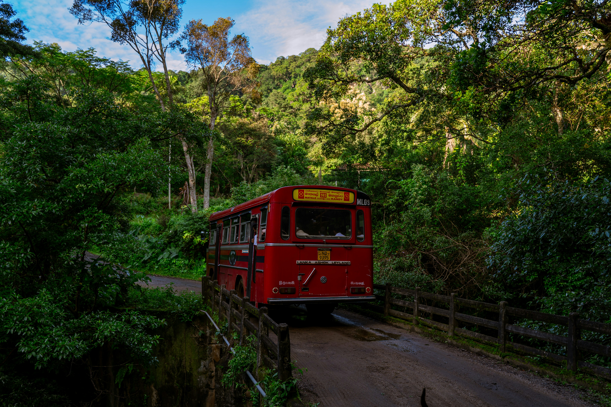

Home › Getting Around
Getting Around

Public buses
Serve Taniti City, 5 a.m.–11 p.m. daily.
Private buses
Serve the rest of the island.
Taxis
Available in Taniti City.
Rental cars
Rent near the airport.
Bikes
Rent from several vendors. Helmets are required by law.
Walking
Taniti City is flat and walkable; so is Merriton Landing.